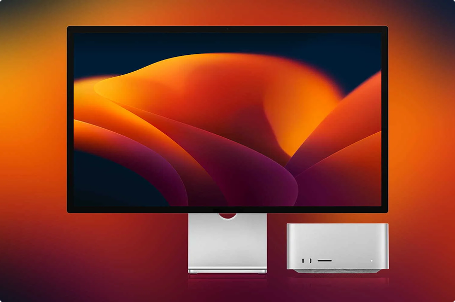

Теория цвета - Как цвет влияет на поведение потребителей
Наталья Васильева Разработчик
Теория цвета — это особенности эмоционального восприятия человеком тех или
иных цветовых решений. Цвета и различные их комбинации влияют на психику
человека, а значит, во многом определяют его поведение. Маркетологи и
веб-дизайнеры хорошо знают, что правильно подобранная цветовая гамма сайта
помогает привлечь и удержать внимание пользователей, сформировать
положительное отношение к продукту, подтолкнуть посетителей к совершению
целевых действий, повысить конверсию.
Универсального ответа на вопрос, как тот или иной цвет влияет на разных
людей, нет. Эмоциональная и поведенческая реакция каждого человека зависит
от личного опыта. Вместе с тем можно выделить определенные закономерности
влияния цветов на поведение пользователей.
В исследовании «Влияние цвета на маркетинг» (Impact of color on marketing)
говорится, что использование разных цветов может существенно влиять на
настроение и поведение потребителей. Утверждается, что от 60 до 90%
покупателей (в зависимости от категории продукта) дают положительную или
отрицательную оценку товару, основываясь только на его цвете.
Теория цвета - Как цвет влияет на поведение потребителей
Наталья Васильева Разработчик

Теория цвета — это особенности эмоционального восприятия человеком тех
или иных цветовых решений. Цвета и различные их комбинации влияют на
психику человека, а значит, во многом определяют его поведение.
Маркетологи и веб-дизайнеры хорошо знают, что правильно подобранная
цветовая гамма сайта помогает привлечь и удержать внимание
пользователей, сформировать положительное отношение к продукту,
подтолкнуть посетителей к совершению целевых действий, повысить
конверсию.
Универсального ответа на вопрос, как тот или иной цвет влияет на разных
людей, нет. Эмоциональная и поведенческая реакция каждого человека
зависит от личного опыта. Вместе с тем можно выделить определенные
закономерности влияния цветов на поведение пользователей.
В исследовании «Влияние цвета на маркетинг» (Impact of color on
marketing) говорится, что использование разных цветов может существенно
влиять на настроение и поведение потребителей. Утверждается, что от 60
до 90% покупателей (в зависимости от категории продукта) дают
положительную или отрицательную оценку товару, основываясь только на его
цвете.